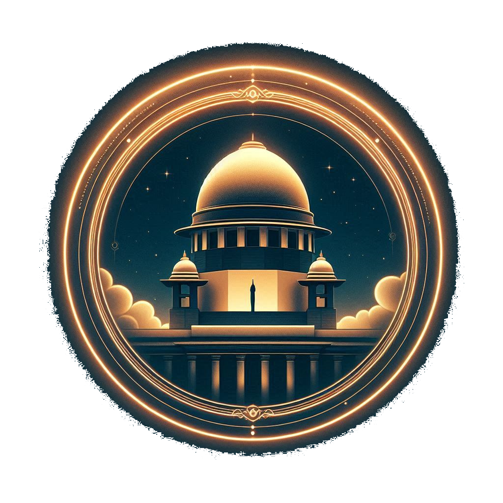

Dive into the workings of India’s judiciary with our interactive website, designed to make learning both engaging and easy. Explore real-life examples that bring judicial concepts to life, and enjoy fascinating facts that add a touch of excitement to your study. Our platform also features interactive quizzes and riddles to test your knowledge in a fun way. Whether you’re a student or just curious, our site is your gateway to understanding the judiciary with ease and enjoyment!
What is Judiciary?
The judiciary interprets and applies the law, ensuring justice is served fairly and impartially. It operates independently from the executive and legislative branches, resolving disputes and reviewing laws to protect individual rights. By ensuring that legal rules are followed and addressing conflicts, the judiciary maintains social order and upholds constitutional freedoms. Essentially, it acts as the guardian of justice, ensuring everyone adheres to the rules and laws.
Key Functions
Interpreting Laws:
Courts interpret laws to ensure they are applied correctly in individual cases. This helps clarify the meaning of laws and their application to real-life.
Resolving Disputes:
Whether it’s a disagreement between two individuals, even between the state and citizens, the judiciary resolves these disputes through legal proceedings.
Protecting Rights:
The judiciary safeguards individual rights and liberties by reviewing laws and government actions to ensure they do not violate constitutional principles.
Maintaining Order:
By adjudicating cases and enforcing legal rules, the judiciary helps maintain order in society and ensures justice.

Supreme Court of India
The Supreme Court of India is the highest judicial authority in the country. Established in 1950, it serves as the final court of appeal, ensuring the rule of law is upheld across the nation. The Court's iconic dome symbolizes its paramount role in interpreting the Constitution and delivering justice at the highest level.
High Court of States
High Courts are the principal courts of justice in each state and union territory of India. The Delhi High Court, for example, handles a wide range of civil, criminal, and constitutional cases. These courts play a crucial role in maintaining legal order and addressing significant legal disputes at the state level.
District Court
District Courts operate at the grassroots level of the Indian judiciary, handling a variety of civil and criminal cases within their respective districts. These courts are the first point of contact for most people seeking justice and play a vital role in the day-to-day administration of justice
Specialized Courts
Specialized Courts in India, such as Family Courts and Labor Courts, focus on specific types of cases. Matters like divorce, child custody, and inheritance, Disputes between employers and employees. These courts ensure that specialized issues are addressed by experts in the relevant fields.
Articles
We’re turning tricky legal jargon into easy-to-digest bites! Each Article is broken down with fun facts, real-life examples, and current case studies to make learning about the Indian Executive a breeze. Get ready for a fun, engaging tour through how your government really works!
Article 124: Establishment and Constitution of the Supreme Court
Description:
Article 124 sets up the Supreme Court of India, the highest judicial authority. It details how the Court is formed and the qualifications required for its judges, ensuring a top-tier institution for justice.
Real Life Example:
The appointment of Chief Justice D.Y. Chandrachud in 2022 followed the procedures outlined in Article 124, reflecting the process of judicial appointments.
Case Study:
The 2022 appointment of Chief Justice D.Y. Chandrachud, following Article 124’s guidelines, illustrates the structured process for Supreme Court appointments and the role of seniority and collegium recommendations.
Fun Fact:
The Supreme Court is the highest court of appeal in India, making its decisions final and binding on all other courts!
Article 125: Salaries and Allowances of the Supreme Court Judges
Description:
Article 125 ensures that Supreme Court judges are paid a fixed salary and allowances, safeguarding their financial independence and neutrality in their role.
Real Life Example:
The salary increase for Supreme Court judges in 2023 was implemented to match Article 125’s standards, aiming to maintain judicial independence.
Case Study:
The 2023 salary adjustment for Supreme Court judges ensured compliance with Article 125, reinforcing the principle of financial independence crucial for judicial impartiality.
Fun Fact:
Judges' salaries are set by Parliament and can only be increased, never decreased, ensuring their financial security!
Article 126: Acting Chief Justice
Description:
Article 126 provides for the appointment of an Acting Chief Justice when the Chief Justice is unable to perform their duties. This ensures the continuity of leadership in the Supreme Court.
Real Life Example:
When Chief Justice Ranjan Gogoi retired in 2019, Justice Sharad Arvind Bobde was appointed as Acting Chief Justice until a permanent successor was chosen.
Case Study:
The appointment of Justice Sharad Arvind Bobde as Acting Chief Justice in 2019, following the retirement of Justice Ranjan Gogoi, ensured seamless judicial leadership as per Article 126’s provisions.
Fun Fact:
An Acting Chief Justice steps in to maintain the Court’s operations smoothly whenever the Chief Justice is unavailable!
Article 127: Appointment of Additional Judges
Description:
Article 127 allows for the appointment of Additional Judges to the Supreme Court when there is a need for more judges temporarily, ensuring the Court can handle a high volume of cases.
Real Life Example:
In 2021, Additional Judges were appointed to handle a backlog of cases, following Article 127's provisions for temporary judicial support.
Case Study:
The temporary appointment of Additional Judges in 2021 to manage an increased case load showcased Article 127’s role in ensuring judicial efficiency during peak periods.
Fun Fact:
Additional Judges can be appointed as needed, ensuring the Supreme Court remains efficient even during busy times!
Article 131: Original Jurisdiction of the Supreme Court
Description:
Article 131 gives the Supreme Court the authority to hear disputes between states or between the central government and states. It’s like having a top referee for major legal disputes between entities.
Real Life Example:
The Supreme Court adjudicated a dispute between the central government and Tamil Nadu regarding river water sharing in 2020, showcasing its role under Article 131.
Case Study:
The 2020 river water sharing dispute between Tamil Nadu and the central government, resolved by the Supreme Court, highlighted Article 131’s function in resolving inter-state and central-state conflicts.
Fun Fact:
The Supreme Court’s original jurisdiction means it can directly hear cases involving disputes between states or between states and the center!
Article 136: Special Leave to Appeal
Description:
Article 136 allows the Supreme Court to grant special leave to appeal against any court or tribunal decision. It’s like getting a second opinion from the top court on important cases.
Real Life Example:
In 2021, the Supreme Court granted special leave to appeal in a high-profile corporate dispute, reviewing lower court decisions and providing final judgment.
Case Study:
The 2021 corporate dispute where the Supreme Court granted special leave to appeal illustrates Article 136’s role in reviewing significant legal decisions from lower courts.
Fun Fact:
Special leave to appeal under Article 136 is a powerful tool for ensuring that justice can be reviewed by the highest court!
Article 145: Rules of Procedure of the Supreme Court
Description:
Article 145 allows the Supreme Court to set its own rules of procedure. It ensures the Court has a structured process for handling cases efficiently and fairly.
Real Life Example:
The Supreme Court’s updated rules in 2022 for online hearings and case management reflected Article 145’s flexibility in adapting procedures to modern needs.
Case Study:
The 2022 updates to the Supreme Court’s rules, including provisions for online hearings, demonstrated Article 145’s role in evolving judicial processes to meet contemporary requirements.
Fun Fact:
Article 145 gives the Supreme Court the power to make its own procedural rules, allowing it to stay current and efficient!
Constitution Quiz
Article 226: Power of High Courts to Issue Writs
Description:
Article 226 empowers High Courts to issue writs for enforcing fundamental rights and for any other purpose. It’s like having a direct way to challenge and correct governmental actions.
Real Life Example:
In 2022, the Delhi High Court issued a writ to address issues of pollution control, using Article 226 to enforce environmental regulations.
Case Study:
The Delhi High Court's writ in 2022 to enforce pollution control regulations showcased Article 226’s power in safeguarding public rights and addressing government inactions.
Fun Fact:
High Courts can issue writs to correct government actions or to enforce rights, making them powerful guardians of justice at the state level!
Article 227: Power of High Courts to Supervise Lower Courts
Description:
Article 227 allows High Courts to oversee and supervise the functioning of lower courts to ensure justice is administered properly and according to law.
Real Life Example:
In 2021, the Bombay High Court intervened to supervise the functioning of lower courts in a high-profile case, ensuring fair trial procedures.
Case Study:
The Bombay High Court's supervision of lower courts in 2021 highlighted Article 227’s role in maintaining judicial standards and ensuring proper administration of justice.
Fun Fact:
Article 227 allows High Courts to keep an eye on lower courts, ensuring they follow the law and deliver justice effectively!
Article 32: Right to Constitutional Remedies
Description:
Article 32 guarantees individuals the right to approach the Supreme Court directly for enforcing fundamental rights. It’s like having a hotline to the highest court for immediate justice.
Real Life Example:
In 2022, individuals challenged unlawful detention under Article 32, leading to prompt Supreme Court intervention to uphold their fundamental rights.
Case Study:
The 2022 challenge to unlawful detention under Article 32 showed how individuals can directly seek justice from the Supreme Court, ensuring protection of fundamental rights.
Fun Fact:
Article 32 is often called the "heart and soul" of the Constitution, providing a direct route to the Supreme Court for fundamental rights violations!

.png)